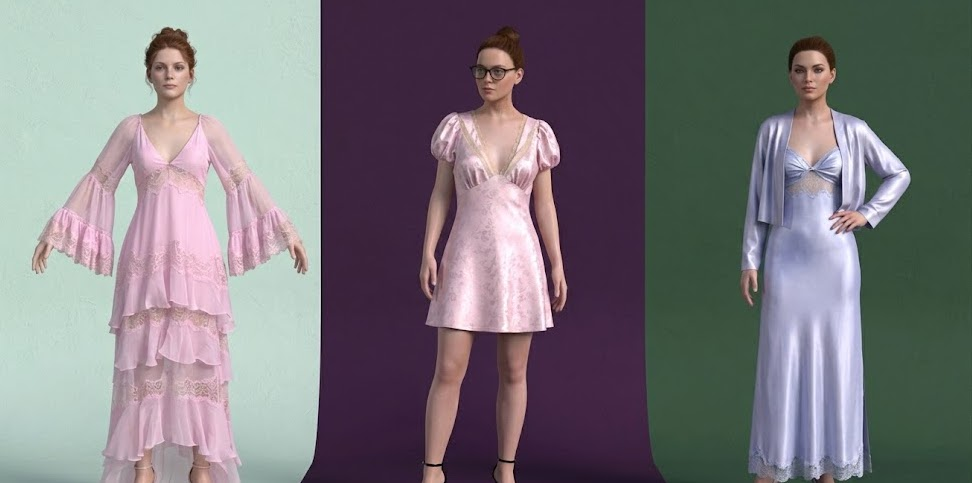

The Mission
Traditional fashion development relies on slow, wasteful physical sampling. For this capsule collection, I used Browzwear VStitcher to move the entire iteration loop into a 3D environment, allowing for instant feedback on drape, fit, and pattern adjustments.


Technical Execution
3D Production Pipeline.
Fabric Physics Simulation
Used VStitcher to simulate realistic fabric drape and fit on digital avatars, validating fit without physical material waste.
Non-Destructive Iteration
Created and refined 3D patterns and seams in real-time, bypassing the weeks-long wait for physical samples.
Sustainability via Tech
Finalized a digital lookbook and 3D renders that served as the "single source of truth" for production.
The Win
Efficiency at Scale.
By bypassing traditional prototyping, we achieved a cost-effective virtual development process that cut sampling time by 75%. This "design-as-code" approach allowed for rapid iteration on fine fit details and fabric simulations without a single yard of waste.
